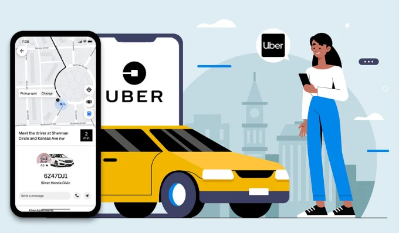

Uber

Nesta secção iremos falar sobre os ubers e de que maneira uma pessoa poderá pedir um uber.
Já se sabe que a uber veio como concorrente das empresas de táxi, mas então o que é a uber?
A Uber é uma plataforma que conecta usuários a motoristas parceiros, uma opção de mobilidade a preços acessíveis que funciona em uma plataforma prática. O aplicativo foi idealizado em 2009, quando Garrett Camp e Travis Kalanick,
criadores da Uber, enfrentaram dificuldades para encontrar um carro para transportá-los ao fim de uma conferência na França. Com a ideia em mente, os dois retornaram ao seu país natal, os Estados Unidos, e a Uber começou a funcionar na cidade de São Francisco em 2010.
Como usar o uber
1.Faça o download do app na App Store ou no Google Play ou, se preferir, acesse o site oficial da Uber.
2.Complete o seu cadastro com seus dados pessoais
3.Preencha o endereço de seu destino no campo Para onde?.
4.Confirme seu endereço de partida e escolha a categoria que deseja utilizar.
5.Escolha sua forma de pagamento, confira o trajeto de sua viagem e o tempo médio de espera do veículo e confirme.
6.O app ou o site apresentarão os dados do veículo e do motorista parceiro. Antes da chegada do carro, você pode usar o app ou site para contatar o motorista parceiro ou cancelar a viagem.
7.Aguarde a chegada do veículo no local indicado. Antes de embarcar, confira se os dados do carro e do motorista parceiro batem com aqueles exibidos no app.
8.Se desejar, explique o caminho de sua preferência ao motorista parceiro. Ao fim da viagem, você poderá classificar sua experiência e deixar um comentário, ajudando a Uber a melhorar cada vez mais.
O porque de usar o uber?
Não vou mentir eu pessoalmente prefiro a uber isto porque todos os motoristas parceiros passam por uma checagem de antecedentes criminais, e precisam manter uma nota média de avaliação por parte dos usuários para permanecerem ativos na plataforma, e para mim que sou jovem é mais fácil ter
acesso daquiolo que está a acontecer pelo telémóvel sendo mais prático.
Acessibilidade
Sendo sincero mas acho que acho que a uber é o caminho certo para ti que tens dificuldades, visto que a uber para pessoas com defeciência te dará várias vantagens como
pagamento eletrónico, transporte a pedido, tarifas antecipadas para que possam saber quando vão pagar e não terem medo ou risco de haver fraude,
políticas antidiscriminação ou seja o motorista masi próximo de si irá atende-lo, politica de animais, ou seja sera possível levar animais consigo e ainda pode partilhar hora de chegada e partida com amigos ou outros familiares preocupados.
Para isto tudo as pessoas na hora de escolher o veículo devem escolher com o uber assist, simplificando com os passos abaixo:
1.Abra a aplicação Uber e indique o seu destino;
2.Arraste de baixo para cima e selecione “Assist”;
3.Após solicitar a sua viagem, entre em contacto com o seu motorista com antecedência para quaisquer necessidades específicas;
4.Tenha uma boa viagem.
E para pessoas surdas essas também não ficam atrás visto que tudo será feito com mensagens de texto e até os pedidos de viagem terão luzes intermitentes, mas terão tudo o que precisam de informações disso no site em baixo:
Site Uber Acessibilidade: https://www.uber.com/pt/pt-pt/about/accessibility/#:~:text=Motoristas%20portadores%20de%20deficiência,-Motoristas%20portadores%20de&text=A%20Uber%20oferece%20oportunidades%20económicas,para%20conduzir%20com%20a%20Uber.